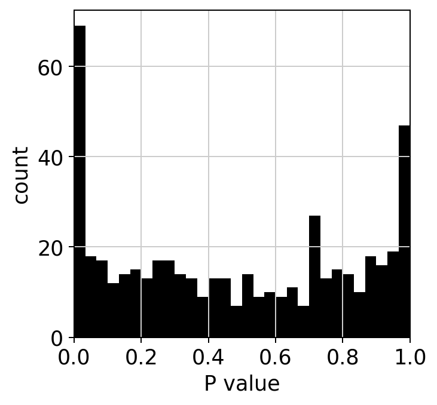

[1]:
import scanpy as sc
import singleCellHaystack as hs
sc.set_figure_params(facecolor="white", dpi=90)
Load toy data
[2]:
adata = hs.load_toy()
adata
[2]:
AnnData object with n_obs × n_vars = 601 × 500
obsm: 'X_tsne'
[3]:
sc.pl.scatter(adata, basis="tsne")

Run haystack
[4]:
res = hs.haystack(adata, coord="tsne", n_randomizations=100, n_genes_to_randomize=100, spline_method="ns")
> starting haystack ...
> entering array method ...
> scaling coordinates ...
> calculating feature stds ...
> calculating grid points ...
> calculating distance to cells ...
> calculating densities ...
> calculating Q dist ...
> calculating KLD for 500 features ...
100%|██████████| 500/500 [00:00<00:00, 5689.77it/s]
> calculating feature's CV ...
> selecting genes to randomize ...
> calculating randomized KLD ...
100%|██████████| 100/100 [00:01<00:00, 69.84it/s]
> calculating P values ...
> done.
QC
We can examine some of the QC plots. First the randomization fits. These are used to calculate KLD from randomized expression levels for a subset of genes, in order to estimate the values to the entire gene set.
[5]:
hs.plot_rand_fit(res, "mean")
hs.plot_rand_fit(res, "sd")


The ranking of logpval and distribution of pval gives us some idea of how many significant genes we can detect.
[6]:
hs.plot_pval_rank(res)
hs.plot_pval_hist(res)

Results
A pandas DataFrame with the results can be obtained. By default the results are sorted by logpval_adj.
[7]:
sum = res["results"]
sum
[7]:
| gene | KLD | pval | pval_adj | logpval | logpval_adj | |
|---|---|---|---|---|---|---|
| 241 | gene_242 | 1.801961 | 1.748949e-38 | 8.744746e-36 | -3.775722e+01 | -35.058253 |
| 274 | gene_275 | 1.738050 | 5.804561e-34 | 2.902281e-31 | -3.323623e+01 | -30.537261 |
| 496 | gene_497 | 1.945970 | 6.162514e-34 | 3.081257e-31 | -3.321024e+01 | -30.511272 |
| 350 | gene_351 | 1.817486 | 3.136079e-33 | 1.568039e-30 | -3.250361e+01 | -29.804643 |
| 338 | gene_339 | 1.730166 | 6.431448e-33 | 3.215724e-30 | -3.219169e+01 | -29.492721 |
| ... | ... | ... | ... | ... | ... | ... |
| 187 | gene_188 | 0.469387 | 9.999956e-01 | 1.000000e+00 | -1.904205e-06 | 0.000000 |
| 362 | gene_363 | 0.685665 | 9.999987e-01 | 1.000000e+00 | -5.429706e-07 | 0.000000 |
| 447 | gene_448 | 0.526370 | 9.999993e-01 | 1.000000e+00 | -2.903058e-07 | 0.000000 |
| 374 | gene_375 | 0.471640 | 9.999999e-01 | 1.000000e+00 | -3.192371e-08 | 0.000000 |
| 379 | gene_380 | 0.565381 | 1.000000e+00 | 1.000000e+00 | -1.109075e-13 | 0.000000 |
500 rows × 6 columns
Plot top 4 genes.
[8]:
sc.pl.tsne(adata, color=sum.gene.iloc[:4], ncols=2, cmap="Spectral_r")

Export results
[9]:
#sum.to_csv("toy-results.tsv")